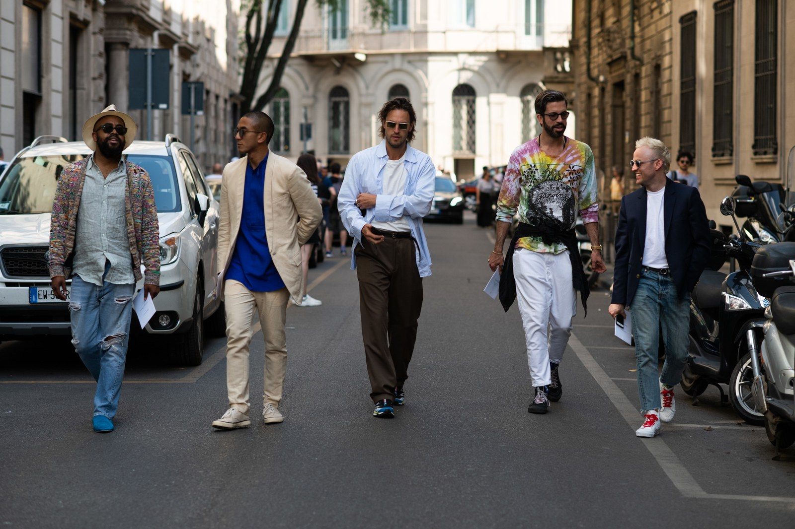

Whether you're going for a long weekend or a whole week, there are a few pieces that are essential. Obviously a lot of things will depend on the weather, but in Italy you can kind of get away with a few similar things for all seasons, just with more or less layers. And as the sun is nearly always shinning,
